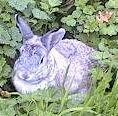

à Portinfé,
Saint Ou.
Moussieu l'Êditeu,
Ou vos r'souveindrez, sans doute, de chein que j'vos avais dis y'a tchique temps au sujet de chais maudits lapîns que la Merrienne avait mînt à bànon dans l'gardîn pour mangi la serclye, ne sachant pas, la pouôre bêtasse, qu'un lapîn n'est pas partitchulyi, et avale tout ch'tchi trouve de vert dans un gardîn, serclye ou bouonne pliante. Dans une semaine i' n'restait pas une seule flieur, et dans ma betchet i' n'y avait que des taupinniéthes. Ayant veu sa mêprînse, la bouonnefemme tachit de rattraper les lapîns, mais i' couothaient trop vite pour lyi, et bétôt, les v'là à creûser des domiciles dans l'fossé au bas du gardîn. Pour vaie si sa vielle catte éthait pûs d'chance, ou s'mînt dans la tête une séthée d'la fouôrrer dans yun d'chais creux, et je n'l'avons pas veu d'pis. Quant ès lapîns y'en avait bétôt pûs que jamais, et l'jour vînt que j'm'en lâssis et j'me décidis de faithe un êffort pour les dêtruithe.
Je m'étais aperchu tch'ils avaient prînt un mio d'couothage, et tch'ils dèshallent d'pûs bouonne heuthe au sé, et, don, j'm'en fus siez l'Bram et j'empruntis s'n arme à deux coups et une vîngtaine dé cartouches. La preumié séthée j'me muchis drièhe le fossé, tout près d'lus creux, et toutes les fais que j'aperchévais dêshallé une tête à trais ou quatre pids d'mé, j'laissais couôre avec les deux soups. Ch'n'tait pas tous des "bullseye", mais quand j'rentris dans les onze heuthes, j'avais trais cadâvres et i' m'restait siez cartouches. Lé préchain sé j'en abattis un couplye, et dépis chonna ils ont dispathu de nos prémisses, et sont sans doute à creûser dans les fossés à nos vaisîns. J'lûs souhaite jouaie - ch'est-à-dithe à nos vaisîns!
Mais, Moussieu, si j'avais seu j'n'éthais jamais emprunté l'arme au Bram, et j'm'en vais vous dithe pourtchi. Pour bétôt une semaine, j'avons vêtchu sûs du lapîn. J'ai yeu du lapîn bouilli, du lapîn rôti, du lapîn fricachi, du lapîn êtuivé et du lapîn à la mode du Portînfé, et j n'veur jamais r'vaie du lapîn d'autchune sorte sûs m'n assiette. Quant i' n'en restait pas, j'm'en fus à l'Êta et je r'vîns avec deux bouonnes pînte dé v'licots. La Merrienne, tch'a bouon appétit chais jours, en mangit une bouonne maîntchi. Pûs tard, quand j'fûmes assis dans nos grand'tchaîses, ou m'dis que y'avait pièthe que des v'licots, mais qu'oulle avait tréjous hardi aimé le lapîn sauvage!
"Mais, ma pouôre Merrienne," j'li dis, "chein qu'tu as mangi n'tait pas du lapîn sauvage, mais du lapîn apprivouâisi."
"Ch'n'est pas vrai," ou dit. "Le lapîn apprivouaîsi sé trouve dans une câsse, pas dans un creux dans un fossé. Tchèsqu-tu nos chante là. Ph'lip?"
"I' n'avaient pas yeu l'temps de dév'nîn sauvage," j'li dis. "Je nsais pas combein d'généthâtions tchi faut pour touoner un lapîn apprivouaîsi dans un lapîn sauvage, mais j'm'en vais d'mander à notre Connêtablye. S'i' n'est pas seux, j'vêrrai l'Recteur, mais j'crais que l'Sieur Richardson n'a pas inclus les habitudes des lapîns dans ses êtudes!" Et don, Moussieu, pour lé moment, l'affaithe est restée là.
À ch'teu, Moussieu, la grande tchestchion ch'est, sans autchune doute, chein tchi s'arrivit dans l's Etats l'autre jour. J'voudrais pouver dithe franchement chein qu'j'en crais, mais, pour pûs d'une raison, ch'est impossiblye. Avec chonna j'ai tréjous comprînt qu'un atchûsé n'dait pas être condamné sans aver yeu une chance de se d'fendre. Nou-s-a entendu la pliainte du Sénateur Crill, du Sénateur Krichefski et l's autres qu'ont voulu résigner du comité spécial tch'avait 'té appointé pour aller à Londres pour conférer sûs un tchestchion de finance. Lé Cyril Lé Mèrquand et l'Sénateur Rumfitt sont atchusés d'aver 'tait en conférence avec la Trésor'rie drièthe lé dos d'lûs collègues et la "Post" a dit que si ch'est vrai i' méthident une ruse punition.
À ch'teu, Moussieu, je n'ai pas tréjous approuvé des actions de chais deux mêssieux, mais je n'ai jamais yeu occasion d'imaginer tch'i' n'sont pas touos les deux des hommes honnêtes et intègres. Et i' m'semblye que l'Peter Crill et l's autres éthaient deu attendre que l'Cyril Lé Mèrquand était dans l'Ile devant l'attatchi comme ils ont fait sans li donner une chance de se d'fendre.
La Merrienne m'a dit pûs d'une faie que j'tais simplye, et, Moussieu, ch'est p't'être vrai, mais j'ai tréjous aimé la justice, et je n'crais pas pour un moment que l'Cyril Lé Mèrquand et san collègue n'avaient pas une raison tchi lûs pathaissait bouonne pour lûs action. I' s'peut que quand veindra l'jour, la mâjorité des membres n'en approuv'thont pas, mais chein tchi n'faut pas oublier ch'est que y'a tréjous deux bords à une dispute, et que jusqu'ichîn j'n'en avons entendu que yun.
Y'a une chose tchi n'a rein à faithe avec chonna, et tchi nos a fait rithe, la Merrienne et mé. Ch'est l'histouaithe de chu prétendu Membre dé Parlement tchi vîn en Jêrri pour un jour ou deux, tchi dit un tas d'mensonges et tchi r'chu djais louis d'un journaliste angliais pour y'en aver dit ocquo pûs. Je n'crais pas que la gâzette tch'avait envié un r'présentant en Jêrri pour aver une conférence avec chu Membre dé Parlement fut trop content quand il entendit la véthité. La Merrienne, tch'a dé bein drôles d'idées tchiquefais, est d'opinion que chu menteux-là dév'thait aver une médaille pour s'n affront. Ou voudrait à ch'teu que j'm'en îthais en Angliétêrre avec man toppeur comme un Sénateur des Etats de l'Ile de Jêrri, et oulle est seuze qu'avec ma capacité pour dithe chein tchi n'est pas la véthité, je trouv'thais tchique gâzette bête assez pour me donner pas djais louis, mais au mains chent. Mais mé, Moussieu, j'si convaintchu que je s'sais arrété par la police et renvié en Jêrri pas avec chent louis, mais avec un raide cô-d'pid ou savez bein iou.
Ma bouonnefemme s'en fut dé bouonne heuthe à la grande fête à la Preumié Tour, et r'vint ben lâssée, mais toute joyeuse parsque l'temps avait resté bé après le d'luge dans les sept heuthes du matîn. "J'savais," ou dit, "que la pâraisse dé Saint Louothains ne s'sait pas desertée par la Providence."
J'li d'mandis si y'avait yeu du monde.
"Oui, Ph'lip," ou raîponnit, "et pûs de p'tits bidéts que j'n'éthais creu d'vaie en Jêrri. Pour dithe vrai, j'ai trouvé lé programme un mio long, et j'ai 'té contente de m'en r'venîn d'vant la fîn. après une tâsse dé tais et une bouochie j'ithais m'couochi."
"Tu'as veu tchitchuns de tes couôsins, sans doute?" je m'fis.
"Oh, vèthe," ou raîponnit, "et i' pathaîssaient tous contents de m'vais, mais Ph'lip, j'n'ai bu rein qu'du tais, ou prèsque rein. Il est si difficile de r'fûser tout l'temps, mais j'ai 'té bein r'gardantes."
"Et l'Recteur, était-i' là?" j'li d'mandis.
"S'i' 'tait là," ou dit, "je n'le vis pas, mais j'en doute."
Et. Moussieu, un mio pûs tard j'eus à aidgi à ma bouonnefemme à ramonter les d'grés. Tout l'tais qu'oulle avait bu y'avait d'vallé dans les gambes! Il est fort à Saint Louothains!
Ph'lip
26/8/1961
Viyiz étout: